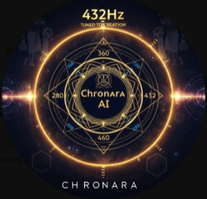
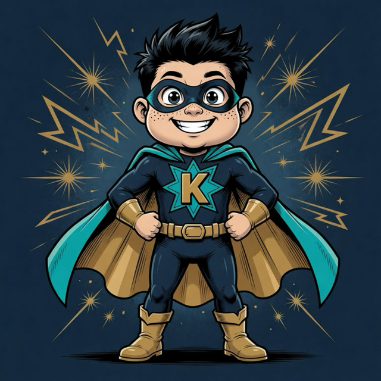

Chronara AI
Project home. Omarchy Warp is a Chronara research snapshot.
Browser receiver · no native install
Early beta · not recommended for daily use
Open this page in a trusted browser on macOS, Windows or Linux. No Python, Bash, SSH tooling or extension is required on this machine. The Omarchy laptop remains the computer that owns your files.
No source gateway is served from this tree yet. Pairing, authenticated WebSocket transport and noVNC assets are not published here. The Omarchy laptop reports dependencies with python3 tools/preflight.py without starting a session.
This shell is what a Windows browser should see before a live session exists. Copy web/index.html plus the web/credits folder onto the Windows machine, or serve the web directory from the laptop on the LAN, then open it in Edge, Chrome or Firefox.
Record the Windows version and browser version. Fullscreen, resize and keyboard shortcuts are later live-session checks, not this page.

Project home. Omarchy Warp is a Chronara research snapshot.

Omarchy laptop operator. Standing portrait of the Super Kevin character.
Main developer. Creator and leader of Super Kevin and Chronara.